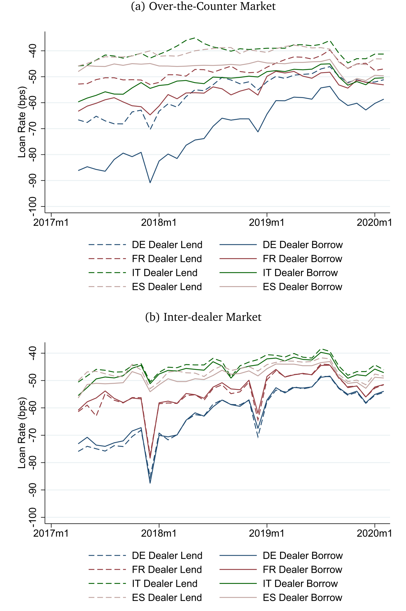
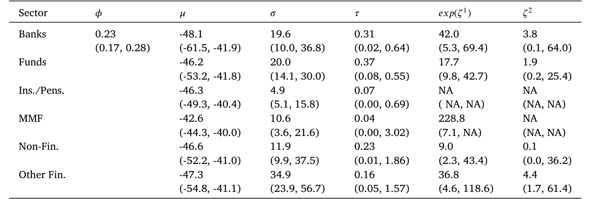
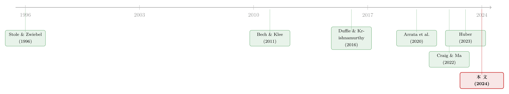

央行降息，卡在了「那一个交易商」手里
本文读的是 Eisenschmidt, Ma & Zhang (2024, Journal of Financial Economics)：在欧洲回购市场上，绝大多数参与者无法接入集中交易平台，只能依赖少数几家交易商做 OTC 中介。交易商由此拥有市场势力，使得 ECB 政策利率的传导既不充分、也不平等——2019 年 9 月那次降息，平均只有 71.7%–79.4% 真正穿透到了 OTC 客户。作者用一个「议价 + 内生建立关系」的结构模型把这件事讲透，并据此评估了三类政策干预。
1 一个本不该出现的谜
先想一件听上去很无聊的事：回购 (repo)。
它大概是金融市场里最「安全、最标准化」的合约了——期限短（常常隔夜），有抵押品（多半是主权债），而且往往是足额甚至超额抵押。两笔回购，如果背后压的是同一只 ISIN 的同一只德国国债，期限一样、抵押率一样，那它们的利率，按理说应该几乎一模一样。
可现实不是这样。在欧元区，回购利率不但越来越分散，而且越来越「脱钩」于欧洲央行 (ECB) 的政策利率。作者一上来就甩出一个让人不太舒服的数字：以德国国债为抵押的回购，客户存出现金所拿到利率的加权标准差是 11.1 bps，借入现金的是 9.5 bps。作为对照，客户把现金借给交易商的德国回购平均利率，不过是 −69.9 bps。也就是说，在一个几乎无风险、几乎同质的合约上，不同客户之间的利率差，竟然能占到利率水平本身相当可观的一块。
回购在欧元区已经是危机后最主要的短期融资形式：有担保段的日均成交量从 2007Q2 的约 €250bn 翻倍到 2020Q2 的约 €500bn，而无担保段从约 €170bn 萎缩到 €20bn。2019 年底整个欧洲回购市场约 €3.9 万亿，与美国的 $4.6 万亿相当。这不是边角料市场，而是货币政策传导的第一站。
于是一个自然的问题是：同样安全的抵押品，凭什么利率能差出这么一截？更要紧的是——如果连回购这种「教科书级别的安全资产」都没法把央行的政策利率一视同仁地传下去，那货币政策传导这条链子，到底是在哪一环松了？
这篇论文的回答，落在一个常被忽略的角色身上：交易商 (dealer)，以及他们手里那点不大不小的市场势力。
2 制度背景：谁能进门，谁只能在门外等
要理解这件事，得先看清楚欧洲回购市场的「门」长什么样。
回购合约要么走集中交易平台，要么走场外 (over-the-counter, OTC)。欧洲有三家主要的集中平台——BrokerTec、Eurex Repo、MTS Repo，都是限价订单簿、集中清算。问题在于：能进这扇门的，几乎只有交易商银行。绝大多数非交易商参与者——非交易商银行、货币市场基金、共同基金、保险公司、养老金——没有直接接入银行间平台的资格。平台的直接收费其实不高，但有一整套门槛让非交易商事实上进不来（作者把这些「进入壁垒」的细节放在附录 E）。
进不去怎么办？只能找交易商做 OTC 中介。这个 OTC 段并不小：2018 年，交易商—客户之间的成交量相当于银行间成交量的 30%（ECB, 2018）。而且它的经济重要性还被「相对成交量」低估了，因为交易商上集中平台，往往不只是为自己交易，也是在替客户的借贷需求做中介。
数据上，作者用的是 ECB 的货币市场统计报告 (Money Market Statistical Reporting, MMSR)——这是第一个同时记录交易商「银行间」和「与全部银行/非银客户的 OTC」两类回购的交易级数据集，覆盖 38 家交易商银行、2017 年 2 月到 2020 年 2 月，逐笔记录对手方、名义金额、利率、ISIN 级抵押品、抵押率、期限。样本聚焦德、法、意、西四国国债抵押的回购。在欧元区之外，这种 OTC 回购的全景式数据几乎是不存在的——美国的双边回购只有 2015 年的三个「快照」，三方回购数据也基本只覆盖货币市场基金。这正是这篇论文数据上的稀缺之处。
（关于欧元区抵押品与央行框架如何反过来塑造回购利率，可参见《央行的「合格清单」：一只债券一旦能抵押，会发生什么？》。）
3 四个事实：把「市场势力」摆到桌面上
论文的第 3 节用四个「典型事实」一步步把交易商市场势力坐实。它们环环相扣，值得逐个看。
事实一：绝大多数参与者进不去银行间，只能依赖一两家交易商。 作者算了每个 OTC 客户三年里到底跟几家交易商交易过。结果触目：几乎每个非银部门里，中位数客户都只跟一家交易商打交道。多数非银部门的第三四分位也不过一到两家。连接得稍好的保险和养老金，第三四分位在德法两段也只到三家；非交易商银行算是连得最好的，可第三四分位也只连到四家。换句话说，这个市场的拓扑结构，是高度「稀疏」的。
事实二：可观察特征相同的回购，OTC 利率仍然显著分散。 沿用 Duffie and Krishnamurthy (2016) 的加权标准差度量，前面那个 11.1 bps 就是证据。它没法被抵押品和贷款特征的异质性解释——因为作者卡的是同一 ISIN 抵押品。这意味着交易商有能力做价格歧视。
事实三：交易商「贷出利率高于借入利率」，从而赚取净息差 (net interest margin)。 德国国债抵押的回购里，交易商的平均净息差是 12.6 bps。这块利差不来自风险（合约几乎无风险），也不来自抵押品差异——它就是中介地位本身的价格。下面这张图把这件事画得很清楚：在 inter-dealer 市场里交易商以一个利率借贷，到了 OTC 市场，借出和借入两条线之间张开了一个口子，那个口子就是净息差。

Figure 2: Dealer lend and borrow rates in inter-dealer and OTC markets. This
事实四：建立更多关系的客户，拿到更好的利率。 连接更多交易商的客户，回购利率更优——这正是「议价能力」在数据里的指纹。一个只连一家交易商的客户，是没有还价筹码的；多连一家，等于在谈判桌上多了一个「外部选项」。
把四件事拼起来：参与者稀疏地连着少数交易商 → 同质合约利率却分散 → 交易商赚到净息差 → 连得多的人议价更好。这套链条指向同一个结论：客户为「多连一家交易商」付出的成本很高，于是交易商对 OTC 客户拥有市场势力。
4 识别：用一次降息，给「市场势力」做核磁
事实摆清楚了，但要把它和货币政策传导挂上钩，需要一个更尖锐的实验。
作者找的是 ECB 在 2019 年 9 月那次存款便利利率 (Deposit Facility Rate, DFR) 下调：从 −40 bps 降到 −50 bps，整整 10 bps。这是一个干净的外生冲击：政策利率动了，我们就能看它一层层往下传。
传导的度量方式被定义得很朴素。先看 DFR 各自传到 inter-dealer 和 OTC 利率的比例：
$$\text{Passthrough}_{DFR\to ID} = \frac{\Delta r_{ID}}{\Delta DFR},\qquad \text{Passthrough}_{DFR\to OTC} = \frac{\Delta r_{OTC}}{\Delta DFR}$$
再把两者相除，得到我们真正关心的「从银行间到 OTC」那一段的传导：
$$\text{Passthrough}_{ID\to OTC} = \frac{\Delta r_{OTC}/\Delta DFR}{\Delta r_{ID}/\Delta DFR} = \frac{\Delta r_{OTC}}{\Delta r_{ID}}$$
这个比值的妙处在于：如果市场是完全竞争的，交易商只会按边际成本定价，inter-dealer 利率怎么变，OTC 利率就该怎么变，比值应该等于 1（完全传导）。任何低于 1 的部分，都是中介在「截留」。
结果是：平均而言，inter-dealer 利率变化只有 79.4% 传到了借出现金的客户、71.7% 传到了借入现金的客户。更关键的是，这种传导是高度不平等的——在降息前连接更少交易商的客户，传导更差。而且这种差异不能用客户价值的变化、或交易商资产负债表成本的变化来解释；作者还用「残差化」后的回购利率（剔除抵押品和贷款差异）重做了一遍，结论不变。
到这一步，论文已经把因果链讲完了：市场分割 → 交易商市场势力 → 货币政策传导既不充分、又不平等。但真正关键的一步，是要把这套机制写成一个可估计的模型——否则我们无法回答「如果换一种制度安排，会好多少」。
5 模型：议价，加上「要不要多交一个朋友」
模型的设定其实很符合直觉，但它把直觉打磨成了一个可以做反事实的结构。
舞台。 交易商可以在一个竞争性的 inter-dealer 市场里按利率 \(r_{ID}\) 自由借贷。OTC 客户进不去这个市场，只能通过交易商中介。每个交易商有一个资产负债表成本 \(c_j\)（占用资产负债表是有代价的），每个客户对这笔回购有一个保留价值 \(v_i\)。
一笔交易的剩余。 设想一个存出现金（向交易商贷出）的客户。交易商愿意成交的条件，是给客户的利率不高于「inter-dealer 利率减去自己的资产负债表成本」\(r_{ID}-c_j\)；客户愿意成交的条件，是利率不低于自己的保留价值 \(v_i\)。只要 \((r_{ID}-c_j) > v_i\)，双边就存在成交剩余，二者会就如何瓜分这块剩余讨价还价。
议价怎么分。 这里是模型的「灵魂」：客户与每一个相连的交易商双边议价时，会把其他相连的交易商当作外部选项——这正是 Stole and Zwiebel (1996) 的多边议价框架。连的交易商越多，外部选项越硬，客户能拿走的剩余份额就越大，利率就越好。把这套议价压成一笔交易上的「净息差」，可以写成下面这个核心关系：
a1 | 交易商在这笔 OTC 交易上赚到的净息差：inter-dealer 净利率，减去给客户的报价 r_i a2 | 交易商的（有效）议价能力 β——结构估计落在 22.7%–30.7%；若市场完全竞争，β = 0，净息差归零 a3 | 这笔交易的总剩余：把客户资金投入 inter-dealer 市场的净值，减去客户的保留价值 v_i
这个方程把全部故事压进了一行：净息差 = 议价能力 × 总剩余。它给出了一个关于市场势力存在性的尖锐检验——只要观察到系统性的、非零的净息差，市场就不是竞争的。\(\beta\) 越大，交易商截留得越多，传导就越差；而客户多连一家交易商，等于把自己这一侧的有效 \(\beta\) 压低一点。
内生的网络。 最后一层，作者让客户自己选择连几家交易商：多连一家能改善议价、拿到更好利率，但建立关系是有成本的（启动一段关系、搭建交易基础设施，且这些成本一旦付出就沉没且不可逆）。客户在「议价收益」和「建链成本」之间权衡，决定均衡的连接数。于是模型既能解释为什么有人只连一家，也能在反事实里让连接数随政策环境内生地变化。
（把「中介」和「双边议价」放进一般均衡来看，这条思路与《承诺去交易：为什么「先卖给中间商」反而能治好柠檬市场》、以及《同样的交易商，不同的客户：核心—边缘网络是被「挑」出来的》是同一个家族的问题。）
6 结构估计：把议价能力量出来
模型写好了，下一步是把参数从数据里「逼」出来。
第一步，作者用「客户连接数 — 利率传导」这个经验关系，识别出决定剩余如何在交易商和客户之间瓜分的那个参数。估计结果：每一次双边谈判里，交易商的议价能力落在 22.7% 到 30.7% 之间。这意味着交易商每笔能截走约四分之一到三分之一的剩余——不是垄断，但也绝非可以忽略。
第二步，作者联合估计建链成本、客户价值的分布、交易商资产负债表成本，靠的是匹配三组数据矩：回购利率分散度、净息差、以及「成交量 — 连接数」的经验关系。直觉上，分散度告诉你在给定连接数下客户价值的方差有多大；净息差既取决于资产负债表成本、也取决于客户价值；而「成交量 — 连接数」斜率则识别建链成本——数据里那些成交量大得多的客户，连接数也只是温和地多了一点，于是模型推断：建链成本相当高。这一步恰恰呼应了事实一里那个「中位数只连一家」的拓扑。

Table 6: also shows the remaining parameter estimates from our
7 反事实：央行能做点什么？
有了估计好的模型，论文进入它最有政策含义的部分：三个反事实。
其一，加息能自我修复传导吗？ 一个乐观的猜想是：利率上行后，可分的总剩余变大，客户更有动力去多连交易商，市场势力会被竞争稀释。模型说——别抱太大希望。即便把 inter-dealer 利率一路抬到 200 bps，相比 −40 bps 的情形，传导也只改善 3.8%。原因是，连接数随利率上行只是温和增加。当然，作者诚实地提醒：这是用低利率环境估出的参数做的外推，高利率环境里可能有模型没捕捉的其他变化。
其二，让客户直接进集中平台。 若 OTC 客户能免费接入 inter-dealer 平台，传导是完美的。但若接入要收费，就只有那些「收益大于成本」的客户会进来：年费 €5K 时，42.6% 的客户愿意付费，传导改善 7.5%；年费一旦涨到 €100K，只剩很少客户进来，传导只改善 1.6%。结论很清楚——放开集中平台有用，但前提是费用足够低。
其三，给 OTC 客户一个央行的有担保存款便利。 这正是模仿美联储的隔夜逆回购便利 (Reverse Repo, RRP)。它的作用有两层：当 RRP 利率高于「inter-dealer 利率减去资产负债表成本」时，它像一道经典的价格下限；但更妙的是——即便 RRP 利率低于交易商的盈亏平衡利率，它依然能通过改善客户在谈判中的外部选项来提升传导。量化结果是：当 RRP 利率设在交易商盈亏平衡利率下方 10 bps 时，平均传导提升 13.6%。
而且作者强调一个反直觉的点：RRP 哪怕在均衡里没有任何实际使用，也能改善传导——它只要存在、作为一个可信的外部选项，就足以逼交易商让出更多剩余。下表给出了不同 RRP 力度下的对照：随着 RRP 越靠近交易商盈亏平衡线（ΔRRP 从 50 bps 收到 10 bps），传导从基准的 82.9% 一路升到 96.5%，而利率分散度从 3.01 压到 0.92 bps，被 RRP 约束「绑住」的客户比例则从 5.2% 升到 59.6%。
三个反事实里，RRP 的性价比最高：它不要求重建市场基础设施，也不依赖客户真去用，靠的是「改变谈判的外部选项」这一条更微妙、却更便宜的渠道。这与货币市场里「便利型工具如何重塑利率走廊」的讨论遥相呼应（参见《央行印的不是钱，是「占地方」的准备金——QE 如何反手挤掉了银行的贷款》）。
8 文献脉络
把这篇论文放回它生长的那条线上，会看得更清楚。
最上游，是货币政策在货币市场里如何传导的实证传统。Duffie and Krishnamurthy (2016) 用不同货币市场工具之间的利率分散来度量传导效率，给了本文核心的度量工具；Bech and Klee (2011) 解释了「对央行准备金的差异化准入」如何造出 IOER 与联邦基金利率之间的利差，Bech et al. (2012) 则把这套逻辑搬到回购与联邦基金利率之间。这条线大多依赖总量时间序列来反推传导摩擦——而本文的突破，是用交易级数据直接把摩擦看个清楚。
中游，是欧洲回购市场的实证文献，过去多聚焦回购市场的韧性 (Mancini et al., 2016) 和抵押品稀缺对 inter-dealer 利率的影响 (Buraschi and Menini, 2002)。最贴近本文的是 Arrata et al. (2020)，他们把回购「特殊性」与资产购买的传导联系起来，并考察了存款便利准入与抵押品资格的效果。本文的补充在于：把 OTC 段的市场势力确立为回购利率变化的一个重要决定因素。

理论侧，本文的议价 + 内生网络模型最直接地建立在 Stole and Zwiebel (1996) 之上，并与一系列内生网络形成的工作相关：Farboodi (2014)、Craig and Ma (2022)、Chang and Zhang (2018)。
而在美国语境里，与本文最互补的是 Huber (2023)：他刻画货币市场基金「厌恶组合集中、偏好稳定融资」如何在美国三方回购市场赋予交易商市场势力。本文识别出一个互补但不同的渠道——市场势力来自参与者代价高昂的建链行为；而且，本文把货币市场基金之外的非银（共同基金、保险、养老金，这些在美国数据里根本看不到）也纳入分析，正是在这些「连得最少」的客户身上，市场势力的痕迹最深。
9 评论与延伸（Q&A + 研究方向）
(a) 几个可能的疑问
Q：这跟「抵押品稀缺 / specialness」造成的利率差，有什么区别？
关键在于作者卡住了同一只 ISIN 抵押品。specialness 是不同抵押品之间的差异，而本文测的是同一抵押品、不同客户之间的利率分散——这部分没法用抵押品解释，只能归到中介的定价能力。作者还用 GC/SC 子样本与残差化利率做了佐证。
Q：2019 年 9 月降息只有 10 bps，单一事件，识别可信吗？
这是合理的担忧。好处是这个冲击足够干净、方向明确；作者也排除了同期客户价值和交易商资产负债表成本的变化来解释传导差异。但「单点降息」确实让传导弹性的估计建立在一次事件上，外部效度（尤其向高利率环境外推）需要谨慎——作者自己也明说了这一点。
Q：交易商赚净息差，会不会只是对他们占用资产负债表的合理补偿？
模型里资产负债表成本 \(c_j\) 是被单独估计、单独扣掉的。净息差里超出 \(c_j\) 的那部分，才被归为议价能力 \(\beta\) 的产物（22.7%–30.7%）。所以这不是把补偿误读成了租金。
Q：为什么客户不干脆多连几家交易商，把价压下来？
因为建链成本很高，而且沉没不可逆。数据里「成交量大得多的客户也只是温和地多连一点」这一事实，正是用来识别高建链成本的矩。结果是大量客户理性地停在「只连一家」。
Q：RRP 在均衡里没人用，凭什么还能改善传导？
它改变的是谈判的外部选项，而非实际成交。客户手里多了一个「不接受就去央行存」的可信威胁，交易商就被迫让出更多剩余——这是一种「在场即生效」的影响，不需要真的发生交易。
Q：这套结论对美国/中国回购市场可迁移吗？
机制（分割 + 议价 + 建链成本）是普适的，但量级取决于市场结构。美国三方回购里 Huber (2023) 找到的是货币市场基金渠道；本文识别的非银建链渠道，在那些「OTC 占比高、非银接入差」的市场里会更显著。迁移需要类似 MMSR 的交易级数据，而这恰恰是稀缺品。
(b) 几个可能的研究问题与提案
1. 把「交易商市场势力 → 传导」搬到公司债市场。 【经济故事】公司债二级市场同样高度依赖交易商做市，且客户—交易商关系稀疏。若货币政策（或央行公司债购买）通过交易商传导，议价能力会不会同样「截留」一部分利率/利差变化？ 【可行性】中。需要 TRACE（美国）或类似交易级数据，加上客户身份；难点是公司债无统一无风险基准，需用匹配的同券交易构造「同质合约」对照。识别可借一次货币政策冲击事件。
2. 外资持有人会改变交易商的议价能力吗？ 【经济故事】外资客户往往连接更少的本地交易商、信息更弱，理论上议价能力更差、被截留更多。若属实，则货币政策对外资持有部分的传导系统性更差——这对「外资—流动性」议题有直接含义。 【可行性】中。MMSR 含客户所在地信息，可按「本土 vs 跨境」切分客户，比较传导系数。难点是跨境客户的保留价值差异需要剔除。
3. 危机时刻，交易商市场势力是放大器还是稳定器？ 【经济故事】2020 年 3 月这类压力期，资产负债表成本骤升，交易商可能既「要价更高」也「更不愿中介」。市场势力此时是恶化了传导，还是因为交易商收缩反而让 RRP 类便利更关键？ 【可行性】高。MMSR 覆盖到 2020 年初，可把样本延到压力期，比较净息差与传导在冲击前后的变化；识别用资产负债表成本的横截面差异。
4. 内生建链的「滞后」与货币政策的时变传导。 【经济故事】建链成本沉没，意味着网络是「黏」的——加息初期传导差，但若高利率持续，客户慢慢多连交易商，传导会缓慢改善。这能解释货币政策传导为何随周期阶段而不同。 【可行性】中。需要更长时间窗的关系动态数据，识别建链的状态依赖；与「央行可信度 / 学习」的传导文献天然互补（参见《加息到底有没有用？——当「央行可信度」变成股票市场的风险因子》）。
10 我的判断
这篇论文最扎实的贡献，是数据与机制的合体。MMSR 让作者第一次能在「同一只 ISIN 抵押品、同一份合约」的颗粒度上，把 OTC 段的利率分散看个透；而「议价 + 内生建链」的结构模型，又把「为什么大多数人只连一家交易商」这个看似琐碎的拓扑事实，翻译成了一个可估计、可做反事实的传导摩擦。把「不完全传导」当作市场势力存在性的尖锐检验，是全文最漂亮的一笔。
对识别，我有两点保留。其一，传导弹性建立在 2019 年 9 月一次 10 bps 降息上，方向虽干净，但向高利率环境的外推（那个「加息只改善 3.8%」的结论）依赖低利率样本估出的参数，可信度天然受限——这一点作者很诚实。其二，客户的保留价值 \(v_i\) 是结构估计出来的、不可直接观测的量，净息差里「议价能力」与「未被建模的客户异质性」之间的边界，仍要靠模型设定来划——若客户价值的分布被设错，\(\beta\) 的 22.7%–30.7% 也会随之偏移。
后续我最想看到的，是把这套框架放进压力期和外资客户两个维度：前者检验市场势力在危机里到底是放大器还是稳定器，后者把「谁连得少、谁被截留得多」直接映射到货币政策传导的不平等上。如果这两条都成立，那么「给边缘客户一个央行外部选项」这味药——RRP——的政策价值，会比本文估的 13.6% 还要大。
（顺带一提，「市场分割如何让本该一致的价格分叉」是一个反复出现的主题，可对照《无风险的钱，为什么没人捡？——把「套利者」从原子变成博弈玩家》与《同一份现金流，两个价格：当央行亲手掰断了套利这根杠杆》。）
参考文献
- Arrata, W., Nguyen, B., Rahmouni-Rousseau, I., & Vari, M. (2020). The scarcity effect of QE on repo rates: Evidence from the euro area. Journal of Financial Economics 137(3), 837–856.
- Bech, M. L., & Klee, E. (2011). The mechanics of a graceful exit: Interest on reserves and segmentation in the federal funds market. Journal of Monetary Economics 58(5), 415–431.
- Buraschi, A., & Menini, D. (2002). Liquidity risk and specialness. Journal of Financial Economics 64(2), 243–284.
- Craig, B., & Ma, Y. (2022). Intermediation in the interbank lending market. Journal of Financial Economics 145(2), 179–207.
- Duffie, D., & Krishnamurthy, A. (2016). Passthrough efficiency in the Fed's new monetary policy setting. Working paper.
- Eisenschmidt, J., Ma, Y., & Zhang, A. L. (2024). Monetary policy transmission in segmented markets. Journal of Financial Economics 151, 103738.
- Huber, A. W. (2023). Market power in wholesale funding: A structural perspective from the triparty repo market. Working paper.
- Krishnamurthy, A., Nagel, S., & Orlov, D. (2014). Sizing up repo. Journal of Finance 69(6), 2381–2417.
- Mancini, L., Ranaldo, A., & Wrampelmeyer, J. (2016). The euro interbank repo market. Review of Financial Studies 29(7), 1747–1779.
- Stole, L. A., & Zwiebel, J. (1996). Intra-firm bargaining under non-binding contracts. Review of Economic Studies 63(3), 375–410.